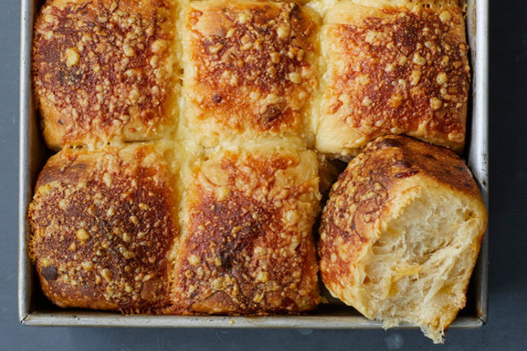

Сырные булочки на пиве
Порции: 4
Время подготовки: 20мин
Время приготовления: 1час
Пассивное время: 1.5часа
Ингредиенты
1) 800 гр. Мука + для раскатки
2) 1 ч.л. Дрожжи сухие
3) 2 ч.л. Крупная соль
4) 55 гр. Сливочное масло + для смазывания
5) 60 мл. Мед
6) 480 мл Пиво светлое
7) 200 гр Сыр Чеддер лучше белый
Процесс приготовления
1. Сливочное масло разделить на 2 равные части. Одну часть
оставить при комнатной температуре для размягчения. а вторую часть растопить.
2. Сыр натереть на крупной терке.
3. В большой миске смешать муку, дрожжи, соль, размягченное сливочное масло,
мед и пиво.
4.Начать вымешивать тесто. Минут через 5-7 вымешивания, всыпать ⅔ натертого
сыра и продолжать вымешивать, пока сыр не распределится равномерно по всему объему теста.
5. Затянуть миску с тестом пленкой и оставить для поднятия на 1-1½ часа.
Тесто должно увеличиться вдвое.
6. Форму для выпечки смазать сливочным маслом..
7. Тесто разделить на 12 равных частей. Каждую часть скатать в шар.
Выложить шары из теста в форму. Если между ними остается немного свободного пространства -
ничего страшного. При выпекании тесто поднимется.
8. Накрыть форму с тестом полотенцем или пленкой и оставить на 20-30 минут расстояться.
9. Разогреть духовку до 200-210°C.
10. Смазать каждую булочку растопленным сливочным маслом и присыпать натертым сыром.
11. Выпекать в духовке 20-25 минут до золотистой корочки.
12. Готовые сырные булочки на пиве подавать теплыми или холодными.